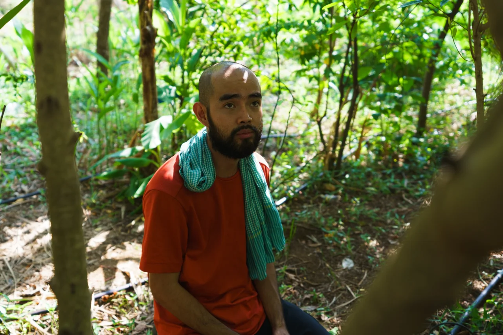
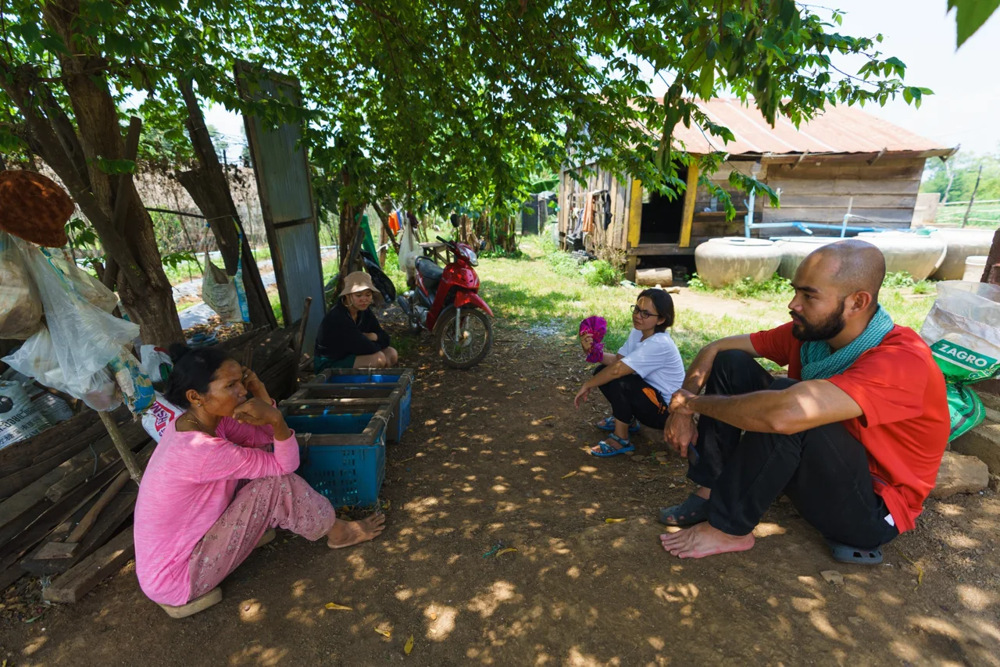

Roots & Canopy
An upcoming agroforestry pilot in Kampong Thom, exploring livelihoods that help keep ancestral forests standing.

Something new is taking root in Kampong Thom. Roots & Canopy is an upcoming Dassatek initiative that aims to work alongside an ethnic youth community to explore how farming, community enterprise, and forest stewardship can strengthen one another.
Start with the community
The production model will develop through community discussion, experimentation, and adaptation. Cocoa, pepper, wood ear mushrooms, and other locally appropriate products are possibilities to explore. Crop choices will depend on local ecology, community priorities, practical trials, and market demand.
Connect production with opportunity
The pilot aims to connect agroforestry and sustainable land management with youth skills, processing, community enterprise, and responsible markets. A key potential partner is 3CORsECO, a Cambodian social enterprise working with community products and agricultural livelihoods. The partnership remains under exploration.
Keep the forest standing
Can keeping forests standing create more lasting value for communities than clearing them? Roots & Canopy will explore one possible answer through forest-friendly livelihoods and fair trading relationships. Its activities and outcomes are still in development.
Follow Dassatek’s channels for updates, or get in touch to explore a connection.


Bring your curiosity.
Let’s make it useful.
Connect with us about partnerships, research, learning, or an idea worth exploring.